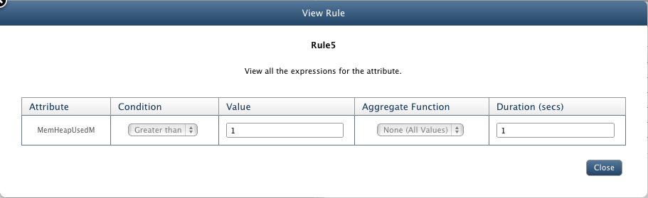
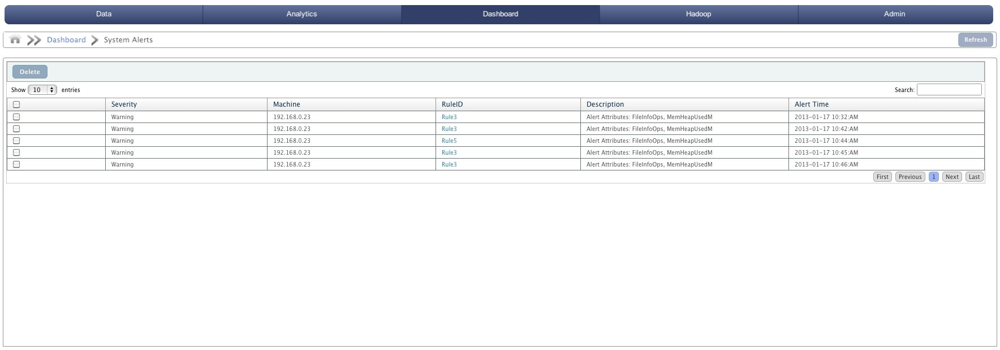

System Alerts on Big Data
In this chapter
This chapter shows how to define rules for alerts.
The state of being watchful for possible danger is known as alert. Alerts are generated when a rule specified by user is violated.
These rules are set for the threshold conditions by the user. An alert is used to highlight an event that needs to be examined.

All Alerts
Goto System Alerts under Dashboard menu tab to view all alerts generated due to violation of rule specified. It is displayed in a tabular form with following attributes:
- Check box to select alert.
- Severity: Warning or Error.
- Machine: IP address of the machine on which alert is generated.
- RuleID: ID of the alert specified at time of creating alert. It has a link which when clicked shows all the attributes of the alert.

- Description: Details about the alert.
- Alert Time: Date and Time when alert was generated.
User can also delete an alert by selecting the check box against the target alert and clicking on Delete button.
Copyright © 2015 QueryIO Corporation. All Rights Reserved.
QueryIO, "Big Data Intelligence" and the QueryIO Logo are trademarks
of QueryIO Corporation. Apache, Hadoop and HDFS are trademarks of The Apache Software Foundation.